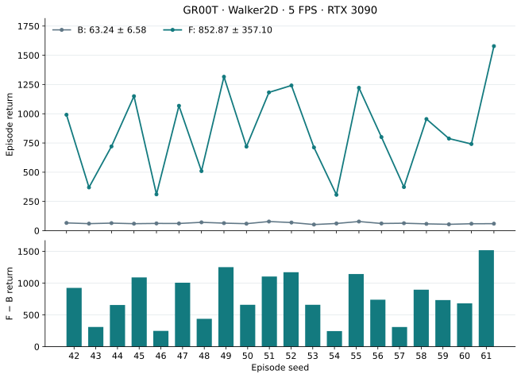
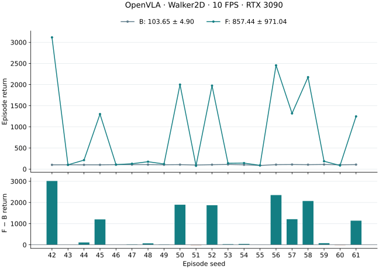
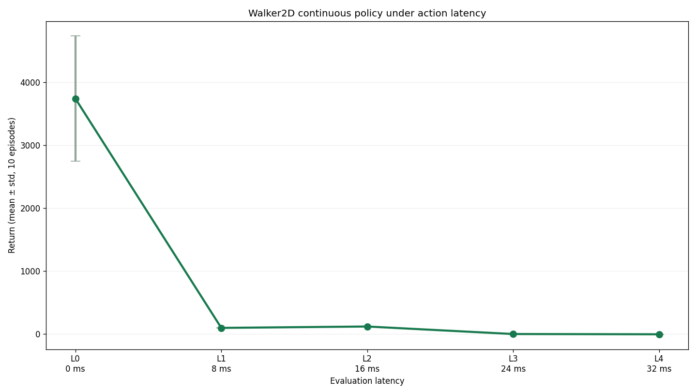
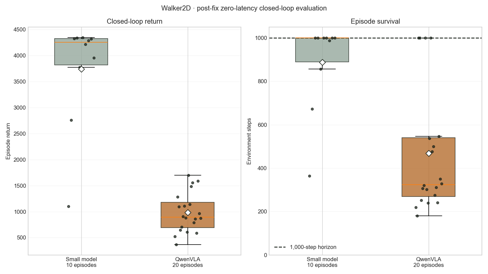

Sample Factory
Native Box(6) creates a 12-parameter continuous policy head.
latency-sensitive-bench / experiment report
OpenVLA and GR00T: training outcomes, measured real-time evaluation, and traceable experiment archives.
Results / verified 18 September 2026
Both model pipelines completed measured real-time evaluation. The original OpenVLA and current GR00T runs retain their own clocks, training recipes and evidence.
| Model / run | B · zero-trained | F · profile-trained | Mean gain |
|---|---|---|---|
| GR00T (QwenGR00T)5 / 5 FPS | 63.24 ± 6.58 | 852.87 ± 357.10 | +789.63+1,248.60% |
| OpenVLA (QwenOFT)10 / 10 FPS | 103.65 ± 4.90 | 857.44 ± 971.04 | +753.79+727.24% |
Return = mean ± population SD. B/F evaluate zero-trained/profile-trained VLAs with measured inference latency. These are within-model comparisons from one training run, not a controlled architecture ranking: clocks, recipes and realized latency distributions differ.
Machine-readable GR00T results · Publication index · All environments
Mean gain = F − B; percentage = (F − B) / B × 100%. An unavailable F has no gain estimate.
Model 01 / GR00T · H1 · 5 FPS
Profile-trained GR00T improves return for all 20 matched seeds on RTX 3090. Mean episode length increases from 61.15 to 250.6 steps. F still terminates well before the 1,000-step cap on average.
| Checkpoint / stage | Execution | Episodes | Return mean ± SD | Mean raw steps |
|---|---|---|---|---|
| Zero VLA · L0 | Simulated, zero latency | 20 | 3,527.99 ± 945.27 | 901.45 |
| Zero VLA · B | 3090 real-time, measured | 20 | 63.24 ± 6.58 | 61.15 |
| Profile teacher · E | Simulated IID, one worker | 10 | 4,228.54 ± 14.59 | 1,000.00 |
| Profile VLA · F | 3090 real-time, measured | 20 | 852.87 ± 357.10 | 250.60 |
These are separate within-model comparisons, not a controlled architecture ranking. Different clocks, recipes and realized latency distributions matter. Standard deviations describe episodes from one training run.

B/F share seeds 42–61, a 1,000-step cap, 5 FPS environment/observation clocks, one inference worker, hold/FIFO scheduling and measured-only latency. The model paths, prompt key 0 → 1 and output directory change. No IID delay is overlaid on F.
| Metric | B | F |
|---|---|---|
| Mean of episode latency means (ms) | 107.05 | 107.06 |
| Mean raw steps | 61.15 | 250.60 |
| Dropped observations | 0 | 0 |
| Dropped actions | 0 | 0 |
| Invalid actions | 0 | 0 |
F frame intervals average 200.00296 ms (198.95315–201.21660 ms). Similar episode-mean latencies do not establish identical per-step delays or an equal-latency causal effect. Logged commands retain the established native torque interface; no action normalization change was introduced for F.
L0 simulation, measured B/F and teacher E are distinct evaluations. E10 reuses the selected teacher’s first ten selection seeds; it is not an independent extra seed block.
Teacher E10 source / step audit · Table values, definitions and provenance
GR00T / Training and provenance
| Stage | Completed result | Evidence |
|---|---|---|
| Zero VLA | 5,000 updates; seed 42; global batch 64. Original APPO H1 data reused; L0 simulation completed. | Stage record |
| P · latency profile | 5 × 10 episodes on RTX 3090; 3,095 samples; mean 111.29 ms / P95 118.32 ms. | Stage record |
| S / E · APPO teacher | Fresh APPO, 10M target frames. Selected training best: 4,223.32 ± 18.18 over 20 selection episodes. E10 reported in the evaluation table. | Stage record |
| R / C · demonstrations | 100 accepted / 100 attempts; 90 / 10 episode split. Conversion verified. | Stage record |
| V · profile VLA | Fresh initialization; 5,000 updates; save and reload verified. | Stage record |
| F · measured real-time | Completed 20 episodes, seeds 42–61; actual RTX 3090 inference latency. | Stage record |
| Stage | Verified result and fixed protocol |
|---|---|
| Task / VLA | Walker2d-v4 native physics; 17D state, six native torques in [−1, 1], single RGB224, H1. QwenGR00T / DiT-B; 4 inference timesteps and 8 diffusion repeats. |
| L0 data / model | Original APPO H1 demonstrations retained: 100 episodes, 85,160 / 9,664 train/validation rows. Only nominal clocks and prompts retimed 125 → 5 FPS. Fresh VLA: 5,000 updates, seed 42, global batch 64. |
| L0 simulation (20) | 3527.99 ± 945.27; mean length 901.45. Zero simulated latency, distinct from measured baseline B. |
| RTX 3090 profile P | 5 × 10 episodes, cap 900, no FPS calibration; 3,095 admitted observations. Observation-to-action mean 111.28701 ms; P95 118.31860 ms. |
| Profile APPO teacher | Fresh 10M-step original sf_official_10m recipe, seed 0, actual-profile IID. Final / training-best each evaluated for 20 episodes; best selected: 4223.32 ± 18.18. |
| Teacher E10 | 4228.54 ± 14.59; 10/10 returns >3000. E10 repeats the first 10 selection seeds (104771–104780), not independent evidence. |
| Profile demonstrations | 100 accepted / 100 total attempts including the 12-attempt probe; 90,000 / 10,000 rows. Strict teacher replay return >3000; train-only state min-max applied once. |
| Profile VLA / F | Fresh 5,000 updates, seed 42, global batch 64 = 2 × microbatch 32 × accumulation 1. VLM/head LR 1e−5 / 1e−4; warmup 100; held-out 200 batches and save every 500. Final F uses actual measured latency. |
The >3000 threshold filters teacher demonstrations. It is not a new VLA acceptance threshold; teacher E10, zero-latency L0 simulation and measured B/F must not be conflated.
Model 02 / OpenVLA · historical reference
The original QwenOFT run is archived under OpenVLA. Environment and observation clocks are 10 FPS; seeds 42–61 identify the matched real-time episode block. This result is separate from the GR00T H1 / 5 FPS run.
Paired seeds: 17 wins, 0 ties, 3 losses. Mean return changes by +753.79. Both checkpoints were evaluated with measured real-time latency.
| Checkpoint / stage | Execution | Episodes | Return mean ± SD | Mean raw steps |
|---|---|---|---|---|
| Zero VLA · L0 | Simulated, zero latency (historical clock) | 20 | 983.91 ± 373.09 | 469.45 |
| Zero VLA · B | 3090 real-time, measured | 20 | 103.65 ± 4.90 | 78.65 |
| Profile teacher · E | Simulated IID, one worker | 10 | 4,102.87 ± 593.64 | 910.40 |
| Profile VLA · F | 3090 real-time, measured | 20 | 857.44 ± 971.04 | 400.25 |

Original adaptation, training and stage-by-stage evidence · Exact paired results and pinned sources
Historical L0 clocks differ from the 10 FPS B/E/F protocol; the original L0 configuration and seed conventions remain in the detailed record. Tables do not imply matched L0 and real-time episodes.
01 / Adaptation
The agent derives the six-actuator order from the environment, retains the native torque vector, and implements continuous actions throughout the scheduler, teacher dataset and VLA head. It verifies the seventeen-dimensional state and saved image-size contract.
Box(-1,1,(6,),float32).env:
task_name: walker2d_continuous_torque
env_id: LatencyBench/Walker2dContinuous-v0
action_space:
type: box
labels: [right_thigh, right_leg, right_foot,
left_thigh, left_leg, left_foot]
low: [-1, -1, -1, -1, -1, -1]
high: [ 1, 1, 1, 1, 1, 1]
noop_action: [0, 0, 0, 0, 0, 0]
latency: {method: zero}Native Box(6) creates a 12-parameter continuous policy head.
Six-value vectors are cloned, delayed, held, and applied directly.
Canonical rows store the actual six torque values.
Conversion and decoding preserve all six dimensions unchanged.
gymnasium_walker2d.py
Continuous task wrapper.
training/gymnasium_sf
Box-aware APPO and latency path.
sf_teacher_config.py
Continuous rollout contract.
starvla_lerobot.py
Native six-value StarVLA handoff.
02 / Zero-latency small model training & evaluation

MUJOCO_GL=egl python -m training.train \
--config configs/examples/gymnasium/walker2d/small_model_train_sf_official_10m.yamlBest checkpoint: /mnt/checkpoints/latency-sensitive-bench/small_models/walker2d/gymnasium_walker2d_continuous_zero_latency_sf_official_10m/checkpoint_p0/best_000013056_6684672_reward_4212.219.pth.
| Latency | ms | Mean return | Std return | Mean length |
|---|---|---|---|---|
| L0 | 0 | 3743.507 | 996.072 | 888.1 |
| L1 | 8 | 93.727 | 6.332 | 70.9 |
| L2 | 16 | 115.681 | 5.698 | 76.0 |
| L3 | 24 | -3.812 | 0.424 | 22.6 |
| L4 | 32 | -7.902 | 0.172 | 18.0 |


03 / Zero-latency VLA training & evaluation
The final QwenOFT checkpoint uses the same high-return teacher data, native six-dimensional action head, L1 objective, batch 16, action horizon 1, 5,000-step budget, seed 42 training configuration, and a learned 17 → hidden_dim state projection. The post-fix online evaluator requests the image size saved with that model.

framework.action_model.loss_type=l1
framework.action_model.state_encoding=continuous_projector
framework.action_model.state_dim=17
framework.action_model.action_dim=6
trainer.max_train_steps=5000
datasets.vla_data.per_device_batch_size=16
trainer.gradient_accumulation_steps=1
MUJOCO_GL=egl PYOPENGL_PLATFORM=egl PYTHONPATH=. \
python -m latency_bench.run \
--config configs/examples/gymnasium/walker2d/starvla_eval.yaml \
--checkpoint-path /mnt/checkpoints/latency-sensitive-bench/openvla_runs/walker2d_rgb_state_l0_return_gt3000_100ep_openvla_native_continuous_projector_sft_5k/checkpoints/steps_5000_pytorch_model.pt \
--model-config-path /mnt/checkpoints/latency-sensitive-bench/openvla_runs/walker2d_rgb_state_l0_return_gt3000_100ep_openvla_native_continuous_projector_sft_5k/config.full.yaml \
--latency-raw-frames 0 \
--output-dir /mnt/results/latency-sensitive-bench/tasks/walker2d/starvla_eval_continuous_projector_image_size_fix_20260909training summary · online run · post-fix L0 summary · 20 L0 episodes
figure builder · 18 focused projector/Walker contract tests passed remotely.
See the normative guide and examples index.
04 / Profiling
P completed five sessions × ten episodes with natural termination: 3,895 admitted canonical observation-to-action samples, no capacity drops, mean 70.496 ms, P95 72.069 ms, P99 74.436 ms. The original source clocks were 125 / 125 FPS; this run uses 10 / 10 FPS while preserving simulator physics, observation stride and raw-frame budgets. Repeated profiling sessions are not independent training seeds.
05 / Baseline VLA evaluation
Evaluate the zero-latency VLA with measured latency at 10/10 FPS, seeds 42–61, a 3,600-step outer cap and native 1,000-step TimeLimit. All 1,573 observations are admitted; there are no invalid or dropped actions.
| Stage | Episodes | Return mean ± std | Mean steps | Evidence |
|---|---|---|---|---|
| B | 20 | 103.65 ± 4.90 | 78.65 | Summary |
06 / Profile-latency small model training & evaluation
| Stage | Episodes | Return mean ± std | Mean steps | Evidence |
|---|---|---|---|---|
| E | 10 | 4,102.87 ± 593.64 | 910.40 | Summary |
Train the small model for 10,006,528 frames using the original APPO recipe and best-reward checkpoint selection, with the measured IID profile and 10/10 FPS. Independent simulated evaluation uses a one-worker pool, configuration seed 0 (actual seeds 104729–104738), and a 1,000-step raw cap. It admits all 9,104 observations. Training and rollout inject action-delay IID; evaluation additionally models worker occupancy.
07 / Profile-latency VLA training & evaluation
S completed 10,006,528 frames using the original APPO recipe and best-checkpoint selection. R accepted 100 episodes from 107 attempts at the unchanged strict return >3,000 gate. The actual dataset has 96,730 rows: 87,052 train and 9,678 validation; all materialized returns pass the gate (minimum 3069.413). All seeds, splits and lengths match the probe; 99 returns match exactly. Episode 99 differs by 0.0000138283. Batch-sensitive FP32 actions provide a plausible numerical mechanism, not proof of sole causation. The original data and failed exact-match audit are preserved in the acceptance record.
V completed 5,000 steps with the original QwenOFT/Qwen3VL4B continuous-projector recipe, batch 16, seed 42, L1 loss and 200 held-out batches every 500 steps. Final training loss is 0.02517; held-out L1 is 0.03632. W&B finished. The matched comparison covers one VLA training seed and one 20-episode evaluation seed block; the simulated teacher result is separate evidence.
| Training condition | Evaluation condition | Episodes | Return mean ± std | Mean steps | Latency mean / P95 ms |
|---|---|---|---|---|---|
| L0 VLA · B | 3090 realtime, measured | 20 | 103.650 ± 4.904 | 78.65 | 70.176 / 71.752 |
| New IID teacher · E | Simulated IID, one worker pool | 10 | 4102.871 ± 593.643 | 910.40 | 70.510 / 72.075 (sampled) |
| New profile VLA · F | 3090 realtime, measured | 20 | 857.437 ± 971.038 | 400.25 | 70.581 / 72.072 |
The full profiling, teacher training, demonstration collection, conversion, VLA training and matched realtime evaluation pipeline completed. The new VLA improves mean return by 753.787 (8.27× baseline), with 17 of 20 paired seeds improving. Variability remains high: no final episode reaches the native 1,000-step limit, and only one exceeds return 3,000. This is improved control under this evaluation contract, not a solved environment.
B and F share seeds 42–61, 10 / 10 FPS, a 3,600-step outer cap and native 1,000-step TimeLimit, 224 RGB, 17-dimensional state, six native torque actions and OSMesa/spawn. F episode lengths are 192–876. B admits all 1,573 observations; F admits 8,004 of 8,005 with one dropped observation. Both have zero invalid or dropped actions. E uses configuration seed 0 (actual seeds 104729–104738), raw cap 1,000, and admits all 9,104 observations. E latencies are sampled from the profile; they are not new hardware measurements. S/R inject action-delay IID; E additionally models worker occupancy/capacity.
All required uploads are verified: profile verified bundle (109 files), teacher verified bundle (14), raw verified bundle (9), converted verified bundle (120), final VLA verified bundle (22). Full verification records are in the run ledger.
P summary · B summary · E summary · F summary · Paired B/F returns · V completion · Dataset publication · Final model publication · Completion ledger
Publication / fixed revisions
Complete compact experiment evidence and raw data · Final model · L0 model / simulation · Selected teacher and profile · Results JSON · Publication receipt
Evaluated F revision af4f38060b0374c5684c43f22cd504257cf2bffd; checkpoint SHA256 1859cec5319db37b97a62d8190f081771f38978fa2ade39cfb82b155ac56b83b. Model documentation revision 54172536f1a4819babf336e599ea38ef4e88809a preserves these weights. Final dataset revision b59922566cb475e61455342b1111b9e9771c09de.
Published evidence includes episode metrics, configurations, exit receipts and compact audits. Full step/action/latency traces remain on the evaluation server after audit; they are not claimed as uploaded. The original OpenVLA record, anchors, media and conditions continue below.
| Artifact | GR00T | OpenVLA |
|---|---|---|
| Models, raw data and provenance | Pinned publication index | Pinned archive index |
| Evaluation and comparison | Stage results · Normalized tables | Paired returns and sources |
Original experiment protocols and publication scope are preserved. Local files contain report media and compact indices; model weights and scientific evidence are linked to pinned Hugging Face revisions.